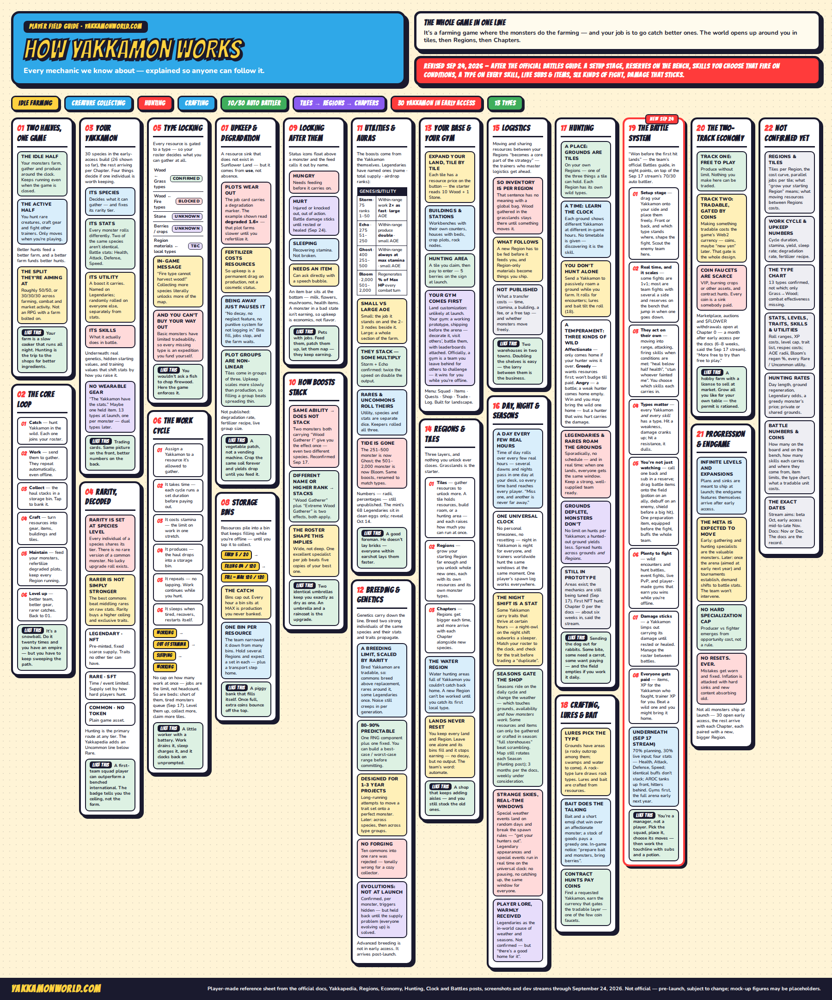

The third dev stream ran an hour with Adam, Craig and Bryn — Spencer was off sick, so his work got narrated rather than demoed. It was the most mechanically dense hour the team has done, and unlike the last two it was almost entirely about the game rather than the pre-registration race.
Four things changed how you should plan a roster. Our Gameplay section has gone from 14 systems to 22, and the field guide poster has been redrawn around them.

1. Combat is a lane-based 3v3 auto-battler
Until this week, “basic combat” was a bullet point. Now it has rules. Monsters hold assigned lanes in a 3v3 formation, you set positions before the fight, and you cannot move them mid-battle unless a skill does it for you. Skills fire in a fixed, visible order. Battles run on an animation timer you can speed up but probably not skip outright.
The tension Bryn named is type advantage versus skill-loop advantage: you can hold a favourable elemental matchup and still lose, because their shield lands before your one big hit. Target pacing is three to five rounds — under a minute — but with deliberate variance, such that the “average” fight is meant to be under 40% of all fights. Expect frequent one-turn solves and the occasional long grind.
The part that matters most for planning: respeccing is deliberately expensive. The intended route is to find a monster carrying the skill you want and extract it onto another. Buildcraft is supposed to come out of breeding, not out of swapping loadouts before every fight. This is explicitly not a game where you re-optimise per encounter — your team composition is a long-term project and the battle executes the plan.
Full detail: The Battle System →
2. Your farm now wears out
The single most consequential mechanic revealed, and it arrived almost in passing from a job-card screenshot. Farm plots degrade as you use them. The example on screen read degraded 1.6× — that plot farms slower until you refertilise it, and fertiliser costs resources.
Read that against the storage bin cap and a long absence now costs you twice: you stop banking output at MAX, and your soil quality decays so that what does run, runs worse. Bryn was clear the intent isn’t to punish going wide — but an unattended Yakkamon farm decays rather than simply pausing, which is a real departure from Sunflower Land.
There’s a second half to it. Growing tiles come in groups of three, and upkeep scales more slowly than production does. Filling out a group is strictly better value per unit of upkeep than spreading thin — a deliberate push toward investing deep rather than wide.
3. Identical boosts do not stack
Asked directly whether two monsters with a wood boost both contribute, the answer was no. Same-named boosts don’t stack. Two copies of “Wood Gatherer I” give you the effect once. Differently named or higher-ranked boosts do stack — “Wood Gatherer” alongside “Extreme Wood Gatherer” is two separate effects and both apply.
The stated intent is to remove any reason to hoard duplicates and create a strong reason to collect breadth. Combined with type locking, the shape of an optimal roster is legible for the first time:
4. Rarity is fixed at species level — and rarer isn’t simply stronger
Two corrections that reframe the whole roster. First: rarity is set at the species level. Every individual of a species shares its tier. There is no rare version of a common monster and no legendary variant of an ordinary one. A whole category of speculation — grinding commons hoping for a lucky upgrade roll — is dead.
Second, and more surprising: the best commons can beat middling rares and roughly match a low-end legendary on raw stat outlay. What rarity actually buys is a higher ceiling as the monster levels, scarcer and higher-impact utility, and traits no other tier can access. Some commons carry unique traits you will need and cannot get anywhere else.
That should temper how the airdrop bands get read. A Genesis Legendary is a ceiling and a set of exclusive tools, not an automatic win — and the utilities still don’t land until September.
What else moved
- Gyms get full customisation; land probably doesn’t. Land layout is unlikely to be player-controlled at launch, but you’ll decorate a core gym that visiting trainers see when they arrive to battle you. Decoration becomes a social display rather than a private hobby.
- Evolutions are per-monster and deliberately hidden. Triggers vary by species — a level, an item, some other condition — and many will be undocumented by design. The game hints that something is required without saying what.
- Matchmaking is confirmed, with an anti-bot design. MMR-based, with no meaningful rewards below a cutoff — the band where weak human players sit, which makes the low end worthless to unsophisticated bots. Better bots get flagged through event tracking.
- The meta is expected to move, and the team isn’t going to stop it. Early on, gathering and hunting specialists are the valuable monsters because throughput funds everything else. Once the arena and tournaments establish, demand should shift toward battle-stat monsters. They know, and they’re letting community demand set the pace.
- An exclusive biome pack. Daniel Diggle, who designed the original Sunflower Land asset pack, has finished the UI HUD and given the studio early access to a biome pack covering biome types, seasons and elements — exclusive to Yakkamon. Adam described the result as a “V2” of the Sunflower Land look.
- Email login, PWA recommended, landscape. Email is the primary login method — no wallet needed to play. The PWA installed to your home screen is described as noticeably faster than a wallet’s embedded browser.
- Guilds are pushed back. Acknowledged as popular, described as a lot of work, explicitly behind core functionality.
- Player lore, warmly received. A community pitch that legendary monsters cause the weather and seasons got a yes-in-principle from both Adam and Bryn. Not confirmed — but the first piece of Yakkamon lore to come from a player.
- 100,000 pre-registered trainers, up from 45,000 two weeks ago.
The honest caveats
The battle screenshot that circulated is an internal dev gym, not the finished battle screen — placeholder backgrounds, rough layout. Skill counts aren’t settled; the team is considering cutting to around two per monster with more passives. Real-time interaction during battles is in testing, not confirmed. The hunting mechanic itself is still described as not 100% locked. And the team repeated its standing disclaimer: everything is pre-launch and subject to change.
Most of the credit for the combat system went to Matt L, the studio’s game design intern, who has been on the team a matter of weeks.
What we’d do with this
Stop planning around duplicates. Plan a wide roster with one strong specialist per resource type, because that’s what boost stacking rewards and type locking demands. Assume you’ll need to log in regularly rather than weekly, because degradation punishes absence in a way bin caps alone did not. And treat a Genesis Legendary as an access pass to exclusive traits rather than a guaranteed stat advantage — the September utility drop is still the thing that decides its real worth.